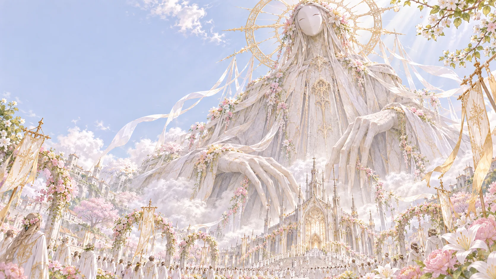
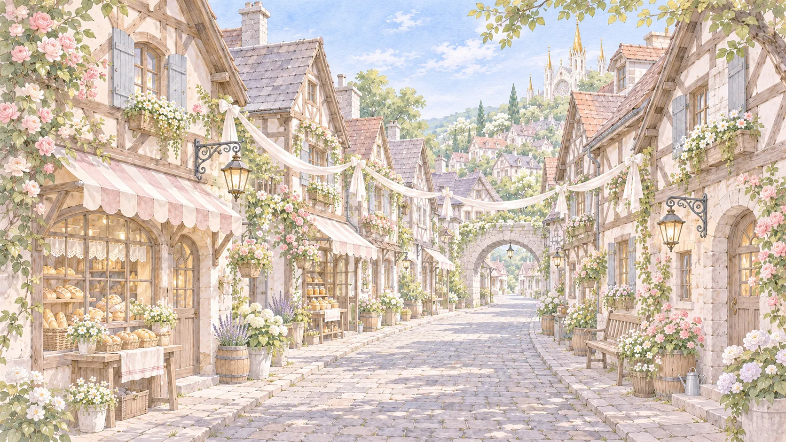
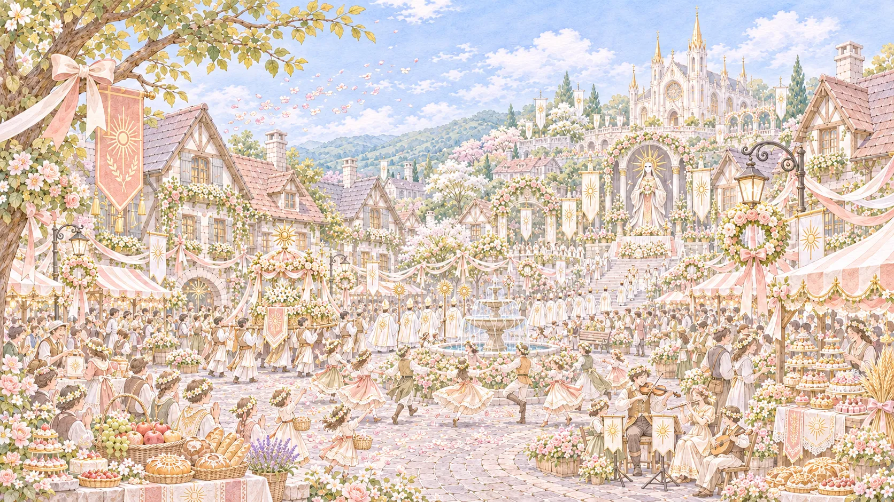
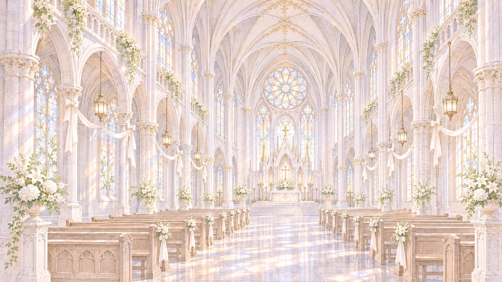
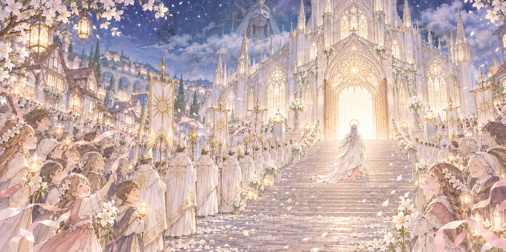

聖女と献上祭
すべての幸福は、神様から。
今年も、恵みと祝福に満ちた季節が訪れます。

Festival
一年で、いちばん幸せな日。
はじめてこの村を訪れたあなたへ。
献上祭は、神様からいただいた恵みに感謝を捧げる、村で最も大切なお祭りです。
この日は村中が花と白いリボンで飾られ、人々は歌い、踊り、聖女様の門出を祝福します。
聖女様は村のみんなの祝福を受け、神様のもとへと旅立ちます。
そして、神様は私たちに、新たな富と幸福を授けてくださるのです。
すべての幸福は、神様から。
Blessings
神様からの四つの恵み
豊穣の恵み
黄金色の穂が実り、村には豊かな食糧が満ちます。
健康の恵み
病める人には癒やしが、すべての人に健やかな日々が訪れます。
平和の恵み
穏やかな季節が続き、人々は安心して暮らせます。
繁栄の恵み
村には富がもたらされ、暮らしはますます豊かになります。
神様は、いつも私たちを見守ってくださいます。だから私たちも、心からの感謝をお返しするのです。
村のみなさんの声
「献上祭の翌朝、何年も実をつけなかった木に、たくさんの果実がなっていたんです！ 神様には感謝してもしきれません。」
―― 果樹園の女性
「ずっと病気だった母が、元気に歩けるようになりました。神様には感謝してもしきれません。」
―― 村の青年
「今年も聖女様のおかげで、みんな幸せに暮らせますね！ 神様には感謝してもしきれません。」
―― 村の女性
「娘は今ごろ、神様のもとで幸せに暮らしています。献上祭の日は、うれしくて……いえ、涙は見せません。神様には感謝してもしきれません。」
―― 昨年旅立たれた聖女様のお母様
すべての幸福は、神様から。
Saints
村のみんなに愛される、特別な存在。


聖女様は、神様に選ばれた尊い存在です。
神様の教えを学び、祈りを捧げ、人々の幸せを願います。
村人たちは聖女様を敬い、心から大切にしています。
聖女様の幸せは、村のみんなの幸せ。
だからこそ、聖女様にはいつも笑顔でいていただきたいのです。
すべての幸福は、神様から。
Schedule
献上祭の一日
-

朝
祝福の準備
村中を花とリボンで飾り、料理や音楽の準備をします。
-

昼
祝福の行列
聖女様が村を巡り、人々が感謝と祝福を捧げます。
-

夕
最後の祈り
神殿に集まり、聖女様の幸福を心から願います。
-

夜
聖女様の旅立ち
聖女様は神様のもとへ。村人たちは歌と祈りで、その門出を見送ります。
すべての幸福は、神様から。
Old Tales
聖女様は、どこへ行くのでしょう？
献上祭を終えた聖女様について、村には古くからさまざまなお話が伝わっています。
神様の花嫁になるというお話
神様と結ばれ、永遠に幸福な日々を過ごすのだといわれています。
神様のお庭で暮らすというお話
花の絶えない美しい庭園で、穏やかに暮らすのだとも伝えられています。
神様の一部になるというお話
神様とひとつになり、永遠に村を見守る存在になるのだという言い伝えもあります。
どのお話が本当なのか、知っている人はいません。
けれど、聖女様はきっと幸せに暮らしていらっしゃることでしょう。
すべての幸福は、神様から。
Saints of the Past
歴代の聖女様
村を幸福へと導いてくださった、聖女様たちのお名前です。
- 第37代セシル様神様のもとで、幸福に
- 第38代アリア様神様のもとで、幸福に
- 第39代ソフィー様神様のもとで、幸福に
- 第40代リディア様神様のもとで、幸福に
- 第41代ノエル様神様のもとで、幸福に
- 第42代クラリス様いま、村を見守ってくださっています
- 次期メル様村のみんなが、心から楽しみにしています
すべての幸福は、神様から。
Q&A
よくあるご質問
- 旅立った聖女様に、また会えますか？
- 聖女様は、いつも私たちを見守ってくださっています。
- 献上祭に参加しないことはできますか？
- 村のみんなが、心から楽しみにしています。
- 神様のお顔を見たことはありますか？
- 神様は、いつもほほえんでいらっしゃいます。
- 聖女様は、旅立ちを望んでいらっしゃるのですか？
- 聖女様の幸せは、村のみんなの幸せです。
- 献上祭のあと、聖女様からお便りは届きますか？
- 豊かな実りこそが、聖女様からのお便りです。
すべての幸福は、神様から。
ここまで読んでくださったあなたも、もう村の家族です。
幸せな村の、五つのお約束
- 一、神様への感謝を忘れないこと。
- 二、聖女様を心から敬うこと。
- 三、みんなの幸せを願うこと。
- 四、聖女様の門出には、涙を見せないこと。
- 五、神様からいただいた幸福を、疑わないこと。
すべては、私たちの幸せのために。
聖女様へ、最後のありがとうを。
献上祭の夜、
それは、
寂しくないと言えば、
それで
どうか、
あなたの幸せが、
このページを閉じても、神様はあなたを見守っています。
発行：大聖堂 広報係 ／ 監修：聖女クラリス様